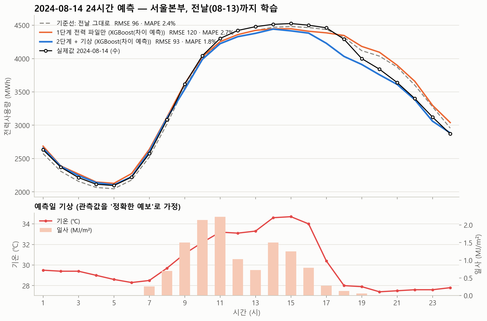
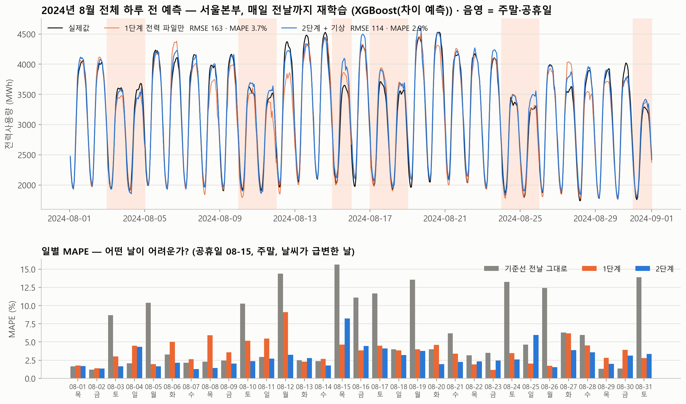
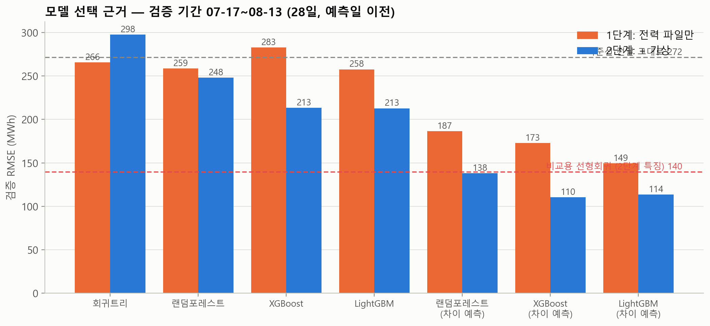
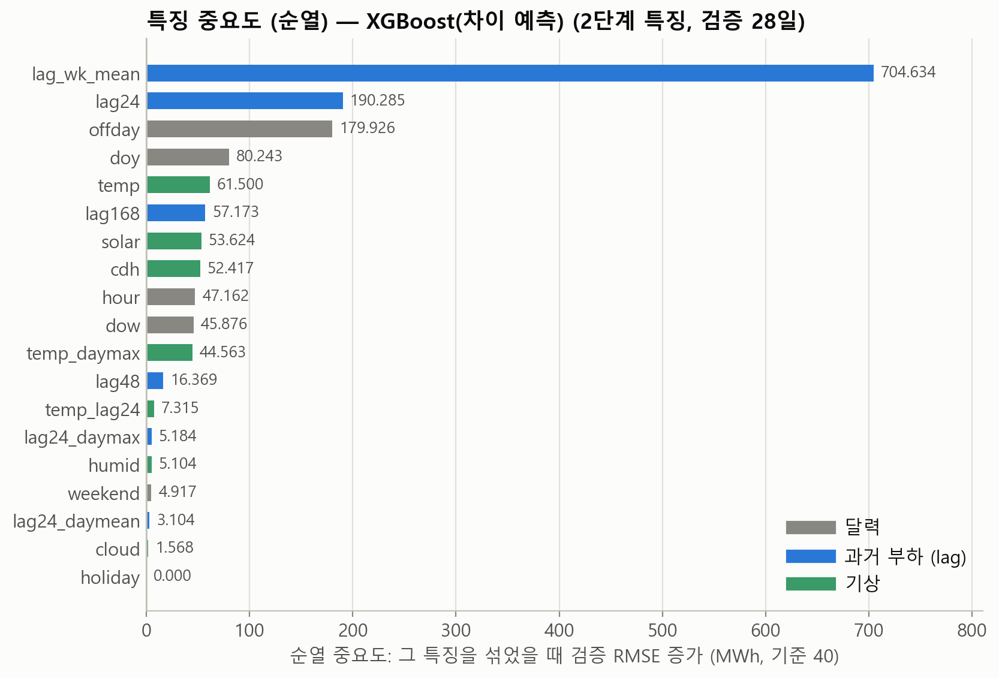

서울본부 시간별 전력수요 하루 전 예측
2024-08-14 24시간 · 2024년 8월 전체 — 트리 모델(회귀트리 · 랜덤포레스트 · XGBoost · LightGBM) · 코드와 데이터는 GitHub 저장소
기준선 "전날 그대로"는 8월 전체에서 MAPE 6.4%(RMSE 326)였다. 단위는 RMSE MWh, MAPE %.
1. 미션
| 단계 | 사용 데이터 | 예측 대상 |
|---|---|---|
| 1단계 | 한전 시간별 전력사용량 파일만 | 2024-08-14 (수) 24시간 |
| 2단계 | + 기상청 ASOS 서울 시간별 기상 | 2024-08-14 (수) 24시간 |
| 3단계 | 1·2단계 특징 각각 | 2024-08-01 ~ 08-31, 매일 전날까지 재학습 |
규칙: 모든 특징은 예측일 전날 24시까지 아는 값만 사용(부하 lag ≥ 24시간). 기상은 예측일 당일 관측값을 "정확한 예보"로 가정(실무에서는 기상예보로 대체).
2. 결과
2024-08-14 24시간 (전날 08-13까지 학습)
| 모델 | 1단계 전력만 | 2단계 +기상 |
|---|---|---|
| 기준선: 전날 그대로 | 96.2 · 2.4% | – |
| 기준선: 지난주 같은 요일 | 248.9 · 5.7% | – |
| 회귀트리 | 188.4 · 4.2% | 176.9 · 3.8% |
| 랜덤포레스트 | 118.4 · 3.1% | 132.6 · 2.2% |
| XGBoost | 149.5 · 3.1% | 170.8 · 2.9% |
| LightGBM | 166.1 · 3.3% | 145.9 · 3.0% |
| 랜덤포레스트 (차이 예측) | 206.4 · 4.9% | 103.5 · 2.7% |
| XGBoost (차이 예측) | 142.9 · 3.2% | 109.7 · 2.2% |
| LightGBM (차이 예측) | 122.0 · 2.9% | 79.5 · 2.2% |
| XGBoost (차이 예측) — 튜닝, 최종 | 120.1 · 2.7% | 93.5 · 1.8% |

2024년 8월 전체 (31일, 매일 전날까지 재학습)
| 모델 | RMSE | MAPE |
|---|---|---|
| 기준선: 전날 그대로 | 326.2 | 6.4% |
| 기준선: 지난주 같은 요일 | 241.9 | 5.5% |
| 1단계 전력만 · XGBoost(차이 예측, 튜닝) | 162.6 | 3.7% |
| 2단계 +기상 · XGBoost(차이 예측, 튜닝) | 113.9 | 2.9% |

어려운 날은 공휴일 08-15(광복절, 2단계 MAPE 8.2%)와 주말→월요일 전환, 폭염이 꺾이거나 비가 온 날이다. 기준선은 그런 날마다 10~15%까지 튄다. 일별 표는 results/03_8월_일별_오차.csv.
3. 왜 이 모델인가 — 검증으로 골랐다
예측일 이전 28일(07-17 ~ 08-13)을 검증 구간으로 두고, 그 구간 RMSE로 모델·특징·학습기간·하이퍼파라미터를 골랐다. 예측일 08-14 값은 선택에 쓰지 않았다.

그래서 타깃을 바꿨다:
y 대신 y − 지난 7일 같은 시각 평균(차이)을 트리로 예측하고 나중에 다시 더한다. 차이는 늘 비슷한 범위에 있어 트리가 잘 다루고, "요즘 수준"은 lag 특징이 실어 나른다. 이 한 줄로 검증 RMSE가 213 → 110으로 절반이 됐다.비교용 선형회귀(2단계 특징)는 검증 RMSE 140. 선형모델은 외삽이 되어 값을 직접 예측하는 트리보다는 좋았지만, 차이 예측 트리에는 못 미쳤다. XGBoost와 LightGBM(차이 예측)은 사실상 동률(110 vs 114)이며 더 낮은 XGBoost를 골랐다.
4. 왜 이 변수인가
| 그룹 | 변수 | 넣은 이유 |
|---|---|---|
| 달력 | hour, dow, weekend, holiday, offday, doy | 하루·주간 패턴, 공휴일(08-15), 계절 위치 |
| 과거 부하 | lag24, lag48, lag168, lag_wk_mean, lag24_daymean, lag24_daymax | "요즘 수준"과 요일 패턴. lag_wk_mean은 차이 예측의 기준값 |
| 기상 (2단계) | temp, humid, solar, cloud, cdh(기온−24℃ 초과분), temp_daymax, temp_lag24 | 여름 수요는 냉방이 좌우. 전날 대비 기온 변화가 "전날 그대로"가 틀리는 이유 |

lag_wk_mean이 압도적인 것은 차이 예측의 기준값이라 당연하고, 그다음이 lag24·offday·doy·temp·solar·cdh 순이다. 기상 변수는 개별 중요도는 작지만 함께 넣었을 때 8월 전체 MAPE가 3.7% → 2.9%로 내려갔다. holiday가 0인 것은 검증 28일에 공휴일이 없어서다.
5. 튜닝은 어떻게 했나
- 특징 세트: 1단계(달력+lag) vs 2단계(+기상) → 2단계.
- 모델: 7개 후보 → 차이 예측 XGBoost.
- 학습 기간: 최근 8주 / 최근 1년 / 전체(2022~) → 전체. 차이 예측은 수준 변화에 둔감해서 긴 기간이 유리했다.
- 하이퍼파라미터 27조합 격자: n_estimators {300, 600, 1000} × learning_rate {0.02, 0.05, 0.1} × max_depth {3, 5, 7} → 1000 · 0.1 · depth 3 (검증 RMSE 110.3 → 99.7). 얕은 트리를 많이 쌓는 쪽이 이겼다.
- 3단계는 고른 설정 그대로 매일 전날까지 다시 학습해 다음 날을 예측했다.
6. 실행
git clone https://github.com/Selb1906/SM-PBL.git cd SM-PBL pip install -r requirements.txt python forecast.py # 약 7분 (검증 1분 · 튜닝 3분 · 8월 rolling 3분)
데이터 처리 메모: 한전 기준시 h는 h시에 끝나는 한 시간(1~24)으로 보고 날짜 + h시간을 시각으로 썼다(24시 = 다음 날 00:00). 기상은 같은 시각의 ASOS 정시 관측을 붙였고, 3시간 이하 결측만 보간, 일사 결측(밤)은 0.